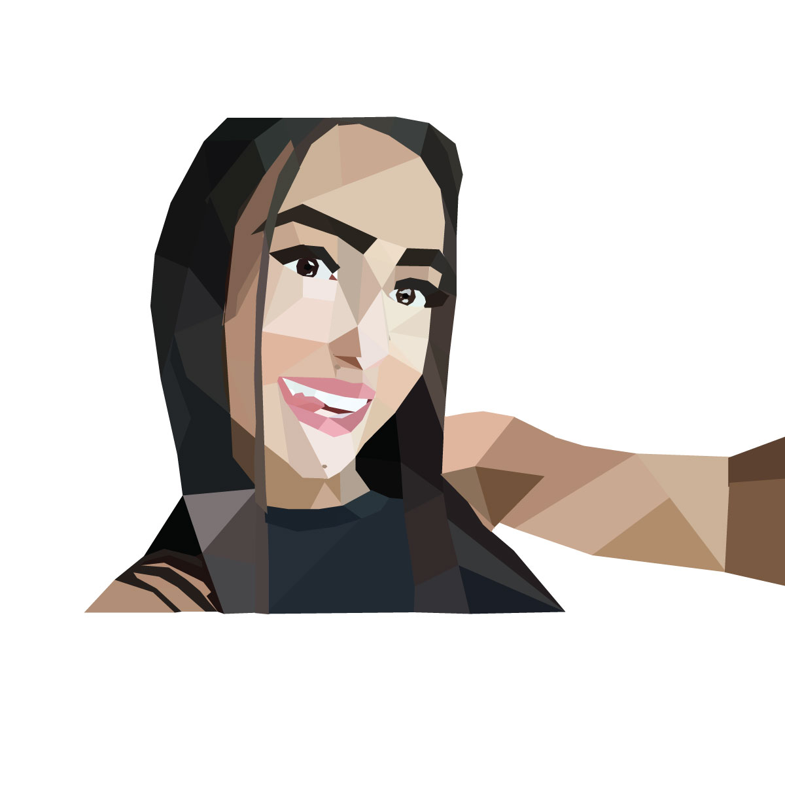
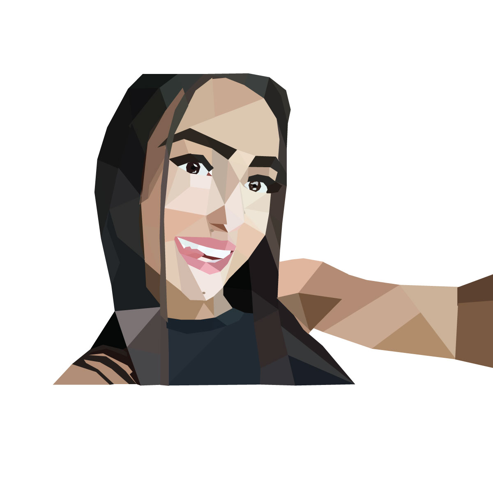

Gallery
I have joined the desiger community very recently so there is still so much for me to learn and create, before I was a fine artist and enjoyed drawing and painting, I have used mutiple mediums however acrylic paint is my favorite. The current software I have explored is Illustrator and Photoshop. Why I chose to start creating art digitally, is because in this new world almost everything is digital and there are various techniques that can be used in digital art that are either harder to create by hand or take longer to create. Besides, I am open to try something new and learn many different skills.
I present you just a few of my works over the years


 
